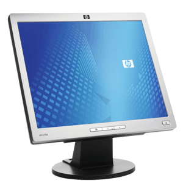

LCD МОНИТОРИ
LCD (Lyquid Crystal Display) - Монитори с течни кристали. Те са много по-тънки, леки и консумират по-малко енергия от CRT мониторите. От задната част на монитора се излъчва ярка бяла
светлина. Предната повърхност е съставена от течни кристали, които блокират част от светлината.
- Предимства:
- малък размер
- ниска консумация
- недостатъци
- ниска разделителна способност
- слаб контраст
